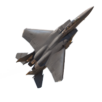
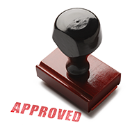

OMNEST provides a generic infrastructure for creating, running, and evaluating simulations. OMNEST caters to the simulation of communication networks, including wired and wireless networks, mobile ad-hoc networks, and sensor networks; hardware like high-speed interconnects and networks-on-chip; it can be used for performance modeling of clouds and other HPC systems; and much more.
As an innovator or researcher, you need to investigate deeply into systems — tweaking existing configuration parameters isn't enough. OMNEST gives you freedom in testing your ideas: it lets you implement in simulation what you want, the way you want it. Expect frameworks and open-source tweakable models instead of "canned" models, a very extensible simulation framework, and many ways to automate your work.

Models are written in C++ and execute on top of a streamlined simulation kernel to provide high event throughput. Parallel simulation and the possibility to utilize computing clusters also save you time when running large simulations or simulation campaigns.

Many reputable companies rely on OMNEST in their R&D for solving problems and exploring design alternatives using network simulation. Several have created their own internal simulation models or model libraries that they can turn to whenever new challenges appear.
Simulation models are built from self-contained blocks that can be combined in many ways. You can explore, modify, and enhance models because you have access to the source code and to the platform infrastructure. You can also get the simulator to work together with other software in your toolbox: external simulators, Matlab, SystemC, HLA, you name it.
OMNEST started as an open-source project, and it shows. We do not hide any source code from you or lock down any part of the product. Well-documented extension APIs, plain-text input and output file formats make it easy to accommodate special needs. Simulations can be run on a multitude of platforms.
Known by the name OMNeT++, OMNEST is a well-established tool in the scientific community. Over 260 papers are published each year at various conferences and in journals, and dedicated workshops take place annually with peer-reviewed submissions. The community mailing list is busier than ever, and there are dozens of OMNeT++-related websites (projects, blogs, etc.). For you, this means you have access to a huge pool of talent and a wealth of information on the Internet.
As a result of the strong user community, there is an ever-growing number of open-source simulation models available to you, covering very diverse domains from internet routing to ad-hoc and sensor networks, in-car networks, 4G, photonic on-chip networks, and so on. These models can give you a jump-start when building your simulation.
{% include next_link.html url="tour-models" text="Take the Product Tour!" small=true %}